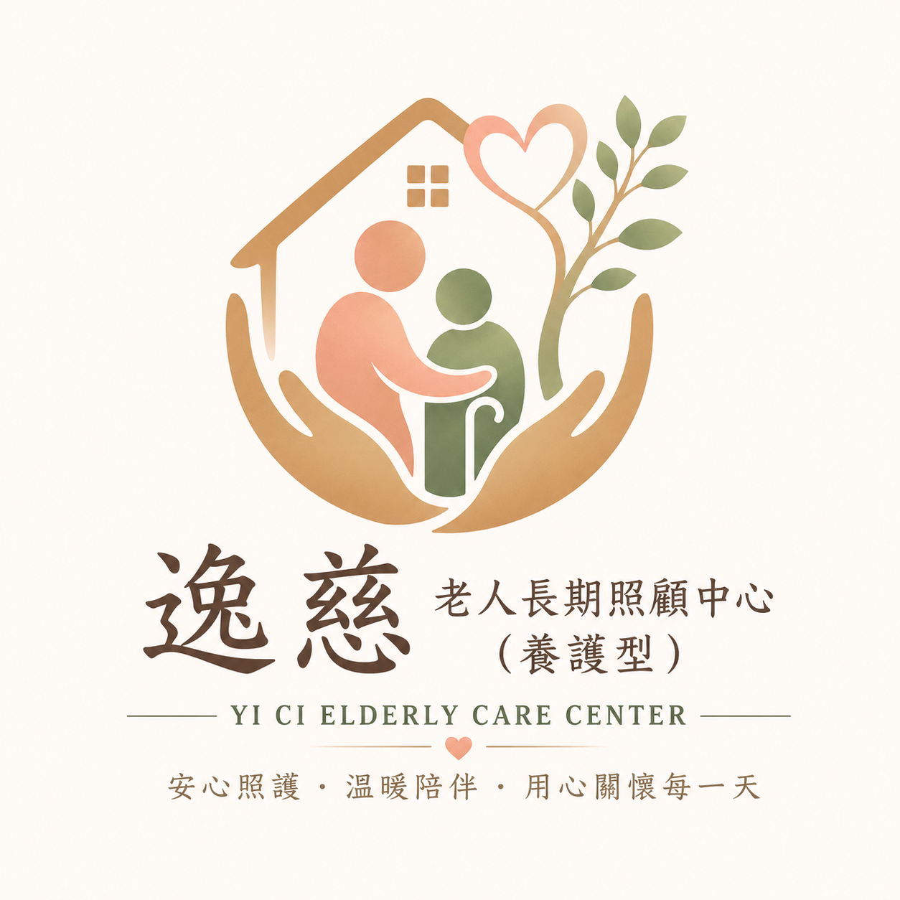

安心照護・溫暖陪伴・尊重生命
🕘 訪視 08:00–12:00 / 14:00–18:00
☎ 諮詢 08:00–12:00 / 14:00–18:00
03-3015051

桃園市私立逸慈
老人長期照顧中心（養護型）
☰
首頁
服務項目
入住須知
收費標準
入住體檢
環境介紹
聯絡我們
SERVICES
服務項目
以住民需求為中心，提供安全、尊重且持續的生活與健康照護。
🩺
專業護理服務
健康狀況觀察
生命徵象與用藥管理
傷口及特殊護理需求
🏡
日常生活照顧
沐浴、穿衣與清潔
餵食、如廁與移位
翻身與舒適照護
🥗
營養膳食
一般、軟質與碎切飲食
半流質與流質飲食
依健康需求調整
🩹
管路照護
鼻胃管照護
導尿管照護
管路狀況觀察與紀錄
🤝
家屬支持
入住適應溝通
照護資訊交流
個別需求協調
🎉
社交與活動
團康及節慶活動
衛教與生活互動
日常陪伴關懷
想了解適合長輩的照護方式？
歡迎來電說明目前需求。
☎ 立即諮詢
☎ 立即來電